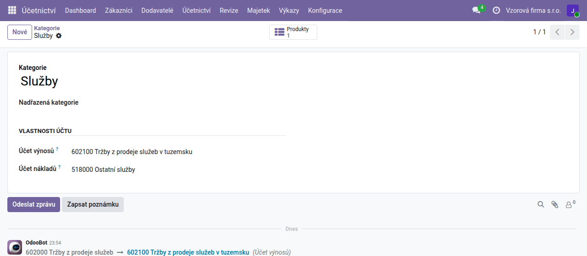
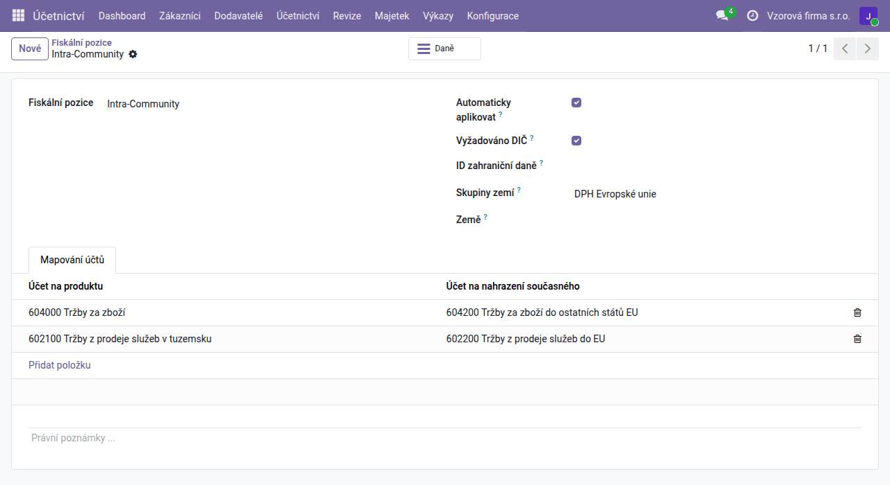
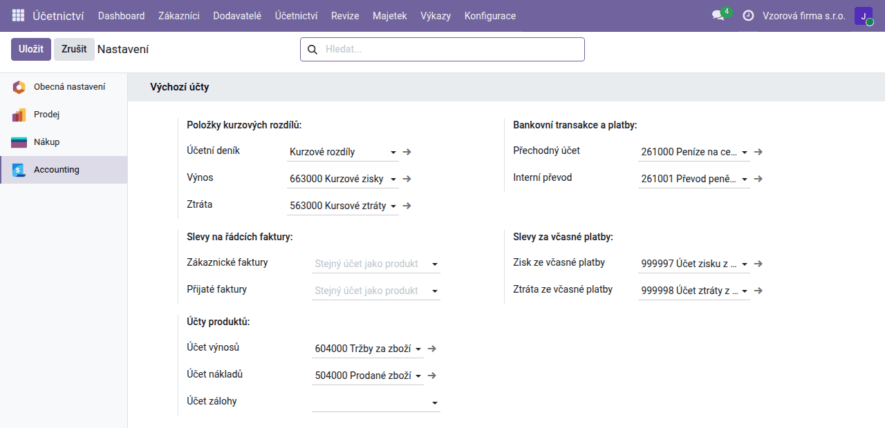

Návod k úloze
Nastavení předkontací
Odkud Odoo bere účet pro každý řádek dokladu a jak nastavit kategorie produktů, produkty, fiskální pozice, daně, partnery a výchozí účty, aby se faktury účtovaly správně bez ručních zásahů.
| Země | Česko |
|---|---|
| Edice | Odoo Community |
| Zahrnuje | account, product, l10n_cz, l10n_cz_vat_return, sale_order_advance_invoice, l10n_cz_sale_order_advance_invoice, purchase_order_advance_invoice, l10n_cz_purchase_order_advance_invoice, l10n_cz_account_cutoff |
K čemu tento návod slouží
V Odoo nikdo nepřiřazuje faktuře účty ručně (předkontace české praxe): každý řádek dostane účet z pravidel nastavených jednou — na produktu, kategorii produktu, dani, partnerovi a v nastavení společnosti. Při dobrém nastavení ten, kdo fakturuje, účet vůbec nevidí a účetní nic nepřeúčtovává. Při špatném skončí všechno na výchozích účtech.
Návod je určen pro roli Hlavní účetní a patří na začátek, před první fakturu. Jak se účtují jednotlivé doklady, ukazuje Denní agenda.
Odkud se účet bere
| Řádek dokladu | Odoo vezme první, který je nastaven |
|---|---|
| Řádek faktury s produktem | Účet výnosů / Účet nákladů na produktu → na jeho kategorii (nebo nadřazené kategorii) → Účty produktů v nastavení společnosti |
| Řádek faktury bez produktu | účet nejčastěji použitý s tímto partnerem na tomto druhu dokladu → Výchozí účet deníku |
| Pohledávka, závazek | Účet pohledávek / Účet závazků partnera |
| DPH | účet na dani (v jejích řádcích rozdělení) |
| Platba, bankovní výpis | účty bankovního deníku a nastavení společnosti |
Poté může fiskální pozice dokladu daně a účty ještě zaměnit (Mapování účtů).
Co je nastaveno po instalaci
Česká účtová osnova v Odoo nastaví 604000 Tržby za zboží a 504000 Prodané zboží pro každý produkt a každou kategorii — v Účetnictví → Konfigurace → Nastavení, blok Výchozí účty, řádek Účty produktů, a také na každé existující kategorii produktů. Výchozí účet deníku prodeje je 604000, deníku nákupu 504000.
Bez dalšího nastavení tedy tržby za služby jdou na 604 místo 602 a nakoupené služby, energie nebo materiál na 504 místo 518, 502 nebo 501.
Kategorie produktů
Kategorie je to, co český účetní zná jako předkontaci: o účtu rozhoduje druh plnění. Účetnictví → Konfigurace → Fakturace → Produktové kategorie, na každé kategorii pole Účet výnosů a Účet nákladů.
Příklad rozdělení (při účtování zásob způsobem B):
| Kategorie | Účet výnosů | Účet nákladů |
|---|---|---|
| Zboží | 604000 Tržby za zboží | 504000 Prodané zboží |
| Vlastní výrobky | 601000 Tržby za vlastní výrobky | — |
| Služby | 602100 Tržby z prodeje služeb v tuzemsku | 518000 Ostatní služby |
| Materiál | — | 501000 Spotřeba materiálu |
| Energie | — | 502000 Spotřeba energie |
| Opravy a udržování | — | 511000 Opravy a udržování |
| Cestovné | — | 512000 Cestovné |
| Reprezentace | — | 513000 Náklady na reprezentaci |

Pro služby použijte 602100, ne obecný účet 602000: fiskální pozice přesouvají tržby na analytiku pro EU a vývoz jen z účtu 602100 (Fiskální pozice).
Účty zjemněte analytikou z vlastního účtového rozvrhu (518100 Nájemné, 518200 Telefony…) a kategoriemi pro ni. Kategorie mohou mít podkategorie; podkategorie bez účtu přebírá účet nadřazené.
Při způsobu A se nakoupené zboží a materiál účtují na 132 / 112 a do nákladů
se dostanou při výdeji ze skladu. To nastavuje modul
l10n_cz_stock_account_method_a, dodávaný samostatně. Dlouhodobý majetek se
účtuje na 042 přes profil majetku — bude mu věnován samostatný návod.
Produkty
Na produktu (Účetnictví → Zákazníci → Produkty nebo Dodavatelé → Produkty) se účet bere z jeho Produktové kategorie; na kartě Účetnictví lze jednomu produktu nastavit jiný Účet výnosů nebo Účet nákladů. Výjimky na produktu si nechte pro skutečné výjimky — pravidlo patří na kategorii, jinak se předkontace rozpadne na stovky produktů.
Pro opakované náklady bez skladu — nájem, elektřinu, telefon, odměnu účetní — se vyplatí založit produkt typu Služba ve správné kategorii. Na přijaté faktuře vyberete produkt a účet i daň jsou hned správně.
Řádek bez produktu dostane účet nejčastěji použitý se stejným partnerem. To pomůže u dodavatele, který fakturuje stále totéž, ale první faktura nového dodavatele spadne na Výchozí účet deníku nákupu (504000). Ten účet můžete v Účetnictví → Konfigurace → Účetnictví → Účetní deníky změnit na ten, který je u vás nejčastější.
Fiskální pozice
Fiskální pozice je daňový režim obchodování s partnerem. Produkt nese daně a účty tak, jak platí v tuzemsku; fiskální pozice je na konkrétním dokladu zamění podle toho, s kým obchodujete. Zákazníkovi z jiného státu EU s DIČ se tak místo 21 % fakturuje osvobozené plnění a DPH z faktury od dodavatele z EU se přizná samovyměřením — to vše z jednoho produktu s jednou sadou daní, aniž by ten, kdo fakturuje, musel pokaždé vybírat správnou daň.
Jak se použije:
- Doklad má pole Fiskální pozice (karta Další informace). Vyplní se z partnera, když ho na dokladu vyberete; na návrhu ho můžete změnit a daně na řádcích se přepočítají.
- Partner ji má buď nastavenou ručně — pole Fiskální pozice na kartě Nákup a Prodej — nebo ji Odoo najde: pozice se zaškrtnutým Automaticky aplikovat platí pro partnery ze země nebo ze Skupiny zemí v jejím nastavení, případně jen pro ty s DIČ (Vyžadováno DIČ). Použije se první vyhovující v pořadí seznamu.
- Pozice zamění daně (každá její daň říká, které daně nahrazuje) a případně účty (Mapování účtů).

Česká osnova má čtyři pozice, všechny se aplikují automaticky (Účetnictví → Konfigurace → Účetnictví → Fiskální pozice). Jejich názvy jsou ve všech jazycích anglicky:
| Fiskální pozice | Pro partnera | Co zamění |
|---|---|---|
| Domestic partners | z České republiky | nic — daně i účty zůstávají tuzemské |
| Intra-Community | z EU s DIČ | prodej: 0% EU G (dodání zboží, ř. 20) nebo 0% EU S (služba, ř. 21), obojí do souhrnného hlášení; nákup: 21% EU G (pořízení zboží) nebo 21% - Přijetí služby od osoby reg. k dani v jiném EU státě (přijatá služba), se samovyměřením; účty 604000 → 604200 a 602100 → 602200 |
| Private trade with the EU | z EU bez DIČ | nic — prodává se s českou DPH |
| Extra-Community | odjinud | nákup: 21% EX G (dovoz zboží) nebo 21% EX S (přijatá služba), se samovyměřením; účty 604100 → 604300 a 602100 → 602300. Prodejní daně nezamění — viz níže |
Partner bez země nedostane žádnou pozici a doklad nese daně produktu beze změny — zemi partnera proto vždy vyplňte.
Tři věci, které je u pozice Extra-Community potřeba zkontrolovat před prvním dokladem mimo EU:
- Vývoz zůstává s českou DPH. Pozice tuzemské prodejní daně nenahrazuje, takže faktura zákazníkovi mimo EU se založí s 21 %. Daň na řádcích změňte sami na 0% EX G (vývoz zboží, ř. 22; pod tímto názvem je v češtině vedena i daň pro služby, viz Daně na produktu), nebo — jednou — tyto dvě daně otevřete (Konfigurace → Účetnictví → Daně) a uveďte u nich tuzemské daně, které nahrazují, tak jako to mají 0% EU G a 0% EU S.
- Dovezené zboží dostane dvě daně. Faktura za zboží ze země mimo EU se založí s daní 21% EX G (DPH přiznaná samovyměřením na ř. 7 a 43) i s daní 0% EX G.Zvyk (DPH vyměřená celním úřadem, ř. 42). Pro konkrétní dovoz platí jen jedna: druhou z řádku odstraňte.
- Tržby za zboží z vývozu se nepřesunou. Mapování účtů vychází z účtu 604100, zatímco zboží se prodává na 604000. Do Mapování účtů pozice přidejte řádek 604000 → 604300, jako má Intra-Community pro 604200.
Tuzemský režim přenesení daňové povinnosti (§ 92a) fiskální pozice
neřeší: nezávisí na partnerovi, ale na druhu plnění — stavební práce, šrot,
vybrané zboží a další. Takovým produktům dejte daně pro přenesení přímo:
Prodejní Daně 0% RC (ř. 25), Nákupní Daně 21% RC nebo 12% RC (ř. 10
a 11). Obchodujete-li s partnerem jen v tomto režimu, například se stavebním
subdodavatelem, můžete si vytvořit vlastní fiskální pozici bez Automaticky
aplikovat, která tuzemské daně zamění za daně pro přenesení, a přiřadit ji
partnerovi ručně. K textu „daň odvede zákazník“ na faktuře a ke kódu předmětu
plnění v kontrolním hlášení viz
l10n_cz_invoice a
l10n_cz_kh.
Daně na produktu
Daně nepatří na kategorii, ale na produkt: pole Prodejní Daně a Nákupní Daně na kartě Obecná informace. České daně mají pro každou sazbu dvě varianty — G pro zboží a S pro služby — a rozdíl se projeví až při obchodu se zahraničím:
| Daň | Pro | Tuzemsko | Se zákazníkem nebo dodavatelem z EU |
|---|---|---|---|
| 21% G (prodej) | zboží | zůstává | 0% EU G — dodání zboží do EU |
| 21% S (prodej) | služby | zůstává | 0% EU S — služba do EU |
| 21% (nákup, zboží) | zboží | zůstává | 21% EU G — pořízení zboží z EU |
| 21% (nákup, služby) | služby | zůstává | 21% - Přijetí služby od osoby reg. k dani v jiném EU státě |
Totéž platí pro sazbu 12 %. Záměnu provádí fiskální pozice, kterou partner dostane automaticky podle země a DIČ.
Pozor na stejné názvy. V češtině se obě nákupní daně 21 % — pro zboží i pro služby — jmenují 21% (anglicky 21% G a 21% S) a obě prodejní daně pro plnění mimo EU 0% EX G (anglicky 0% EX G a 0% EX S). Rozlišíte je v seznamu Konfigurace → Účetnictví → Daně podle sloupce Popis („místní nákup (zboží)“ / „místní nákupy (služby)“) a podle pole Rozsah daně na dani (Zboží / Servisní služby). Doporučujeme si je přejmenovat, například na 21% G a 21% S.
Nový produkt dostane daně z řádku Výchozí daně v nastavení (pro prodej i nákup varianta pro zboží), tedy variantu pro zboží i u služby. U služeb je změňte na variantu pro služby, jinak se služba z EU vykáže jako pořízení zboží a služba do EU jako dodání zboží v souhrnném hlášení.
U faktury za dlouhodobý majetek vyberte na řádku dvojče nákupní daně
s přídomkem Majetek (21% Majetek, 21% EU G Majetek…): je to tatáž daň,
která navíc vykáže základ na ř. 47 přiznání k DPH
(l10n_cz_vat_return).
Účty DPH jsou na dani a není třeba je měnit:
| Účet | Daň |
|---|---|
| 343221 DPH základní sazba výstup | DPH na výstupu 21 % |
| 343212 DPH snížená sazba výstup | DPH na výstupu 12 % |
| 343121 DPH základní sazba vstup | DPH na vstupu 21 % |
| 343112 DPH snížená sazba vstup | DPH na vstupu 12 % |
Při přenesení daňové povinnosti, pořízení z EU a dovozu se samovyměřením se DPH účtuje na oba: na účet vstupu na stranu MD a na účet výstupu na stranu D.
Partneři: pohledávky a závazky
Na partnerovi, karta Fakturace, pole Účet pohledávek (výchozí 311000 Odběratelé) a Účet závazků (321000 Dodavatelé). Změňte je u partnerů, jejichž saldo vedete odděleně — spřízněné osoby, zaměstnanci, společníci. Vybrat lze jen účet typu pohledávky nebo závazky, a to je v české osnově 311 a 321 a několik dalších (315000 Ostatní pohledávky). Pro ostatní si v účtové osnově založte analytický účet tohoto typu, například 311100 Pohledávky – spřízněné osoby.
Výchozí účty společnosti
Účetnictví → Konfigurace → Nastavení, blok Výchozí účty:
| Nastavení | Výchozí | K čemu |
|---|---|---|
| Položky kurzových rozdílů: Výnos / Ztráta | 663000 / 563000 | realizované kurzové rozdíly při úhradě |
| Bankovní transakce a platby: Přechodný účet | 261000 Peníze na cestě | řádek výpisu, který ještě není spárován |
| Interní převod | 261001 Převod peněžních prostředků | převody mezi vlastními bankovními účty |
| Slevy za včasné platby | 999997 / 999998 | skonta z platebních podmínek — nepoužívejte je, viz níže |
| Účty produktů | 604000 / 504000 | poslední možnost, když účet nemá produkt ani jeho kategorie |

Skonto poskytnuté po uskutečnění zdanitelného plnění mění základ daně a zákon o DPH k tomu vyžaduje opravný daňový doklad (§ 42 a § 45). Platební podmínky v Odoo sice nabízejí Skonto, ale to slevu zaúčtuje při úhradě a DPH sníží bez jakéhokoli dokladu; dva účty 999997 a 999998, které si pro něj Odoo vytvoří, nejsou součástí české osnovy. Na platebních podmínkách ho nechte vypnuté; zaplatí-li zákazník dříve se skontem, vystavte na částku skonta opravný daňový doklad (Denní agenda).
Platby zadané ručně (tlačítko Zaplatit) jdou přes 221002 Čekající platby a 221003 Čekající odchozí platby, dokud je nespáruje bankovní výpis. Bankovní deník má Výchozí účet 221001 a Přechodný účet 261000; u každého nového bankovního účtu zkontrolujte, že má vlastní analytiku účtu 221.
Další účty nastaví lokalizace sama při instalaci; v nastavení je najdete zde:
| Kde v Nastavení | Účty | Nastavuje |
|---|---|---|
| Prodej, blok Fakturace | 324001 zúčtování záloh, 324000 krátkodobé, 475000 dlouhodobé přijaté zálohy | l10n_cz_sale_order_advance_invoice |
| Účetnictví, blok Přijaté zálohové faktury | 314001 zúčtování, 314000 poskytnuté zálohy | l10n_cz_purchase_order_advance_invoice |
| Účetnictví, blok Časová rozlišení | 381000, 383000, 384000, 385000 | l10n_cz_account_cutoff |
Kontrola předkontací
- Před potvrzením faktury otevřete kartu Účetní položky: už v návrhu ukazuje přesně ty řádky, které se zaúčtují.
- Po prvním měsíci otevřete Účetnictví → Revize → Kontrola → Účetní položky a seskupte podle účtu a pak podle produktu. Služba na 604000 nebo faktura za energii na 504000 je vidět na první pohled.
- Chybně zaúčtovanou fakturu v otevřeném období vraťte tlačítkem Resetovat na návrh, opravte produkt nebo účet a znovu potvrďte. Opravte i kategorii nebo produkt, aby se chyba neopakovala.